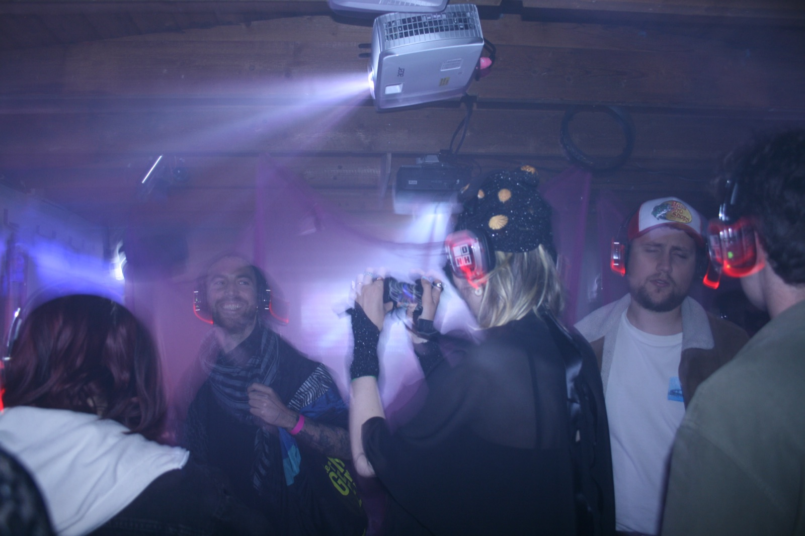
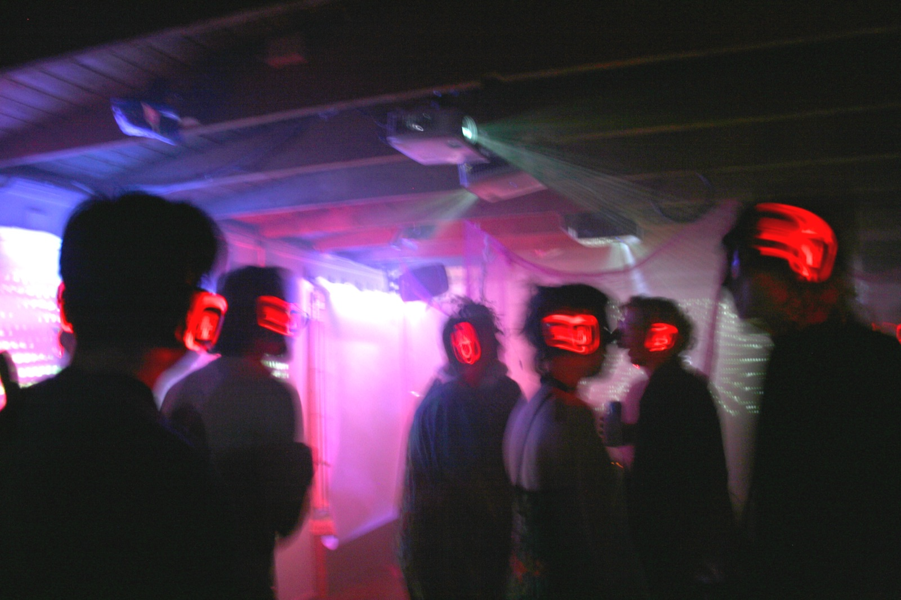
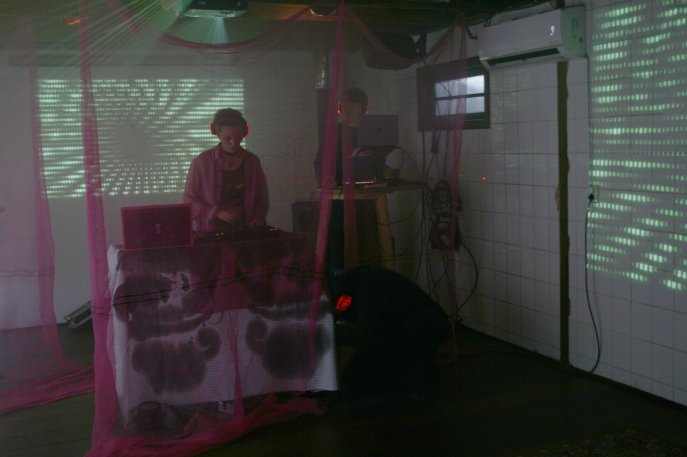
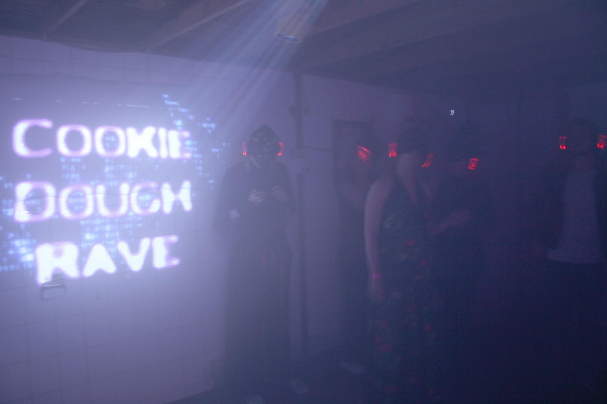

CDrave
CDrave was a one-night rave at Midnight Masquerade festival in Utrecht on 17 May 2025, made together with Syd Yap and Maan Limburg.
The idea: what people post online feels harmless on a phone, but put it on a big screen in a room full of strangers and it suddenly gets awkward. We wanted to play with that feeling, and with how anonymous the internet only pretends to be.
I made the visuals: a TouchDesigner patch that generated live visuals from the visitors’ own social media content, running three beamers from one laptop. At the door everyone signed a privacy statement nobody actually read. Together with the music, props and costumes it turned into a rave that was fun and a bit uncomfortable at the same time (see the video).
We’d love to bring it to school parties, or anywhere else people could use a bit more online awareness.
Art direction: Maan Limburg
Music: Syd Yap
Visuals / VJ: Roman-James Zeph
Photography: Marie van der Linden
Video: Kooki Vaessen
Costumes: Poeka Witts



